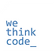
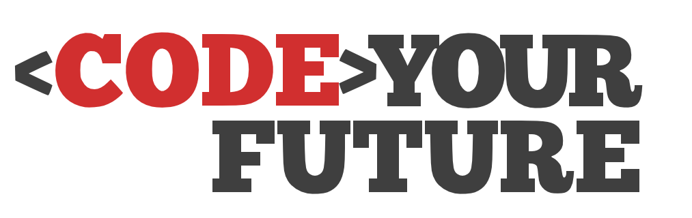

Xolani Mvana
Passionate Software Alchemist
Passionate Software Alchemist
I am a passionate and motivated software development artist at WeThinkCode (WTC), an innovative peer-to-peer learning institution renowned for offering a NQF 5 qualification in computer software engineering. My journey in the world of software development has been driven by my curiosity and eagerness to learn new technologies and apply them to solve real-world problems.
Through my time at WTC, I have honed my skills in a variety of programming languages and development methodologies. I am proficient in Java and Python, and I have experience in developing robust and scalable applications following Test-Driven Development (TDD) and Behavior-Driven Development (BDD) principles. Additionally, I have a strong understanding of client-server architecture, which I put to use in building a server-client application using Java sockets and threads.
I have also gained valuable experience in building pipelines for continuous integration and continuous delivery using GitLab during our recent project. This allowed us to streamline the development process, automate testing, and ensure efficient and reliable software delivery.
At CodeYourFuture, I had the invaluable opportunity to self-teach JavaScript and delve into web development. This experience allowed me to explore the Document Object Model (DOM) and leverage the power of React.js to create responsive and user-friendly websites. I am also well-versed in HTML5, CSS, and Git, which have been essential components of my web development journey.
Moreover, my thirst for knowledge has led me to dive into containerization technologies like Docker and orchestration tools like Kubernetes. I deployed a web application using Docker containers, showcasing my ability to leverage modern DevOps practices for seamless application deployment and management.
Beyond technical expertise, I recognize the importance of effective communication and collaboration in the software development world. That's why I decided to join WTC not only to gain a formal qualification in computer software engineering but also to improve my communication skills and social life through the enriching peer-to-peer environment it offers.
As a software artist, my ultimate aspiration is to become proficient and versatile, capable of tackling diverse challenges in the tech industry. I am always open to new opportunities and collaborations that align with my passion for learning and problem-solving with code.
This was the first site I built; my goal was to fully express myself through it.
Learn MoreThe purpose of this site is to make people self-aware and give clarity to the world around them.
The vision is to collaborate with experts in disciplines that pique my interest, for example, information technology, psychology, and science. Also, to create a platform for compassionate individuals, companies, and experts in their respected disciplines to impact the mass with their work and hopefully influence great change.
Learn Moredocker-practice is a basic Node.js web application that showcases how to containerize a Node.js application using Docker.
It provides a simple API built with Express, and the Dockerfile is included to help you understand the steps required to create a Docker image for the application.
Learn More🔗 I have expanded the docker-practice project's horizons by setting up a simple CI/CD pipeline on GitLab. 🛠️ My pipeline includes build and test stages, ensuring that everything runs smoothly. I've even stored the build folder as an artifact, allowing me to verify the first-stage index.html build and demonstrate it to perfection. 🏗️ And guess what? I've integrated simple unit tests using Jest for a seamless testing experience.
🔧 The build process has been elevated with Webpack, bundling my JavaScript, HTML, and CSS files into an efficient package. ⚙️ But that's not the end of the journey – I'm currently in the process of deploying the application to AWS to demonstrate its real-world capabilities.
Learn More
NQF 5, Computer Software Alchemy
Sep 2022 - Dec 2023
Skills:

Student Sorcerer
May 2022 - Jan 2023
Skills: